bugku web11-30
web11-网站被黑了,黑客会不会留下后门
- 解法一：御剑
在下面可以选择扫描线程以及扫描超时间，还有文件类型等
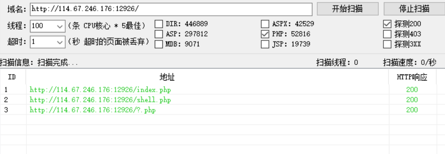
- 解法二：burp的Dashboard模块
主要分为三块：
Tasks：任务
Event log：事件日志
issue activity：动态发现的问题
Tasks 中自带了两个模版，相当于以前版本的spider 和scanner 模块的结合体，支持自定义创建。
live passive crawl from proxy(all traffic) #（来自代理（所有流量）的被动抓取）
live audit from proxy(all traffic) # （来自代理（所有流量）的实时审计）
Event log：这个主要是burpsuite 出现问题或异常状况查看日志用，平时一般用不到。
issue activity：动态发现的问题
Dashboard模块内容参考：https://blog.51cto.com/010bjsoft/2175177
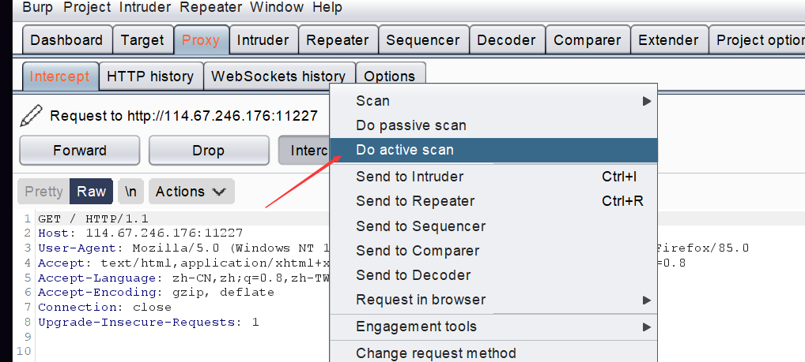
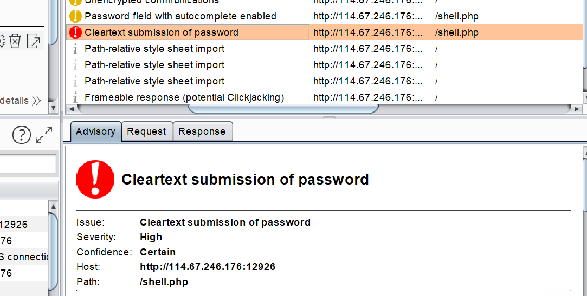
- 最后找到shell.php，发现需要密码才能访问，burp抓包爆破密码，使用burp自带密码字典，得到密码为hack：
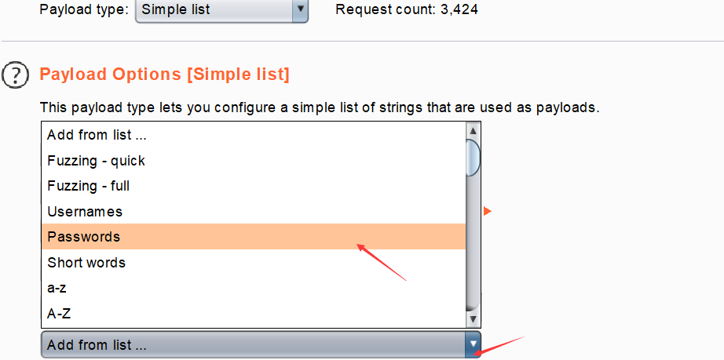
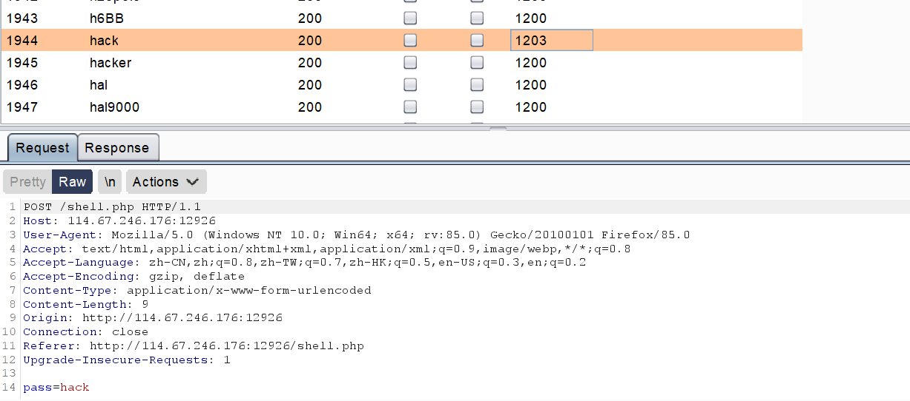
web12-本地管理员
一开始看到登录界面是想到输入之后进行抓包爆破，同时爆破账号密码的时候又觉得这个过程好像有点漫长，就去看了一下源码，一开始看到那个注释里的base64字样还没在意，后来翻看了一下评论里的做法，还要伪造IP，联系了一下题目本地管理员，那就是伪造XFF了，然后就代理关了，尝试登陆，随便输入后登陆，发现IP被禁止访问:
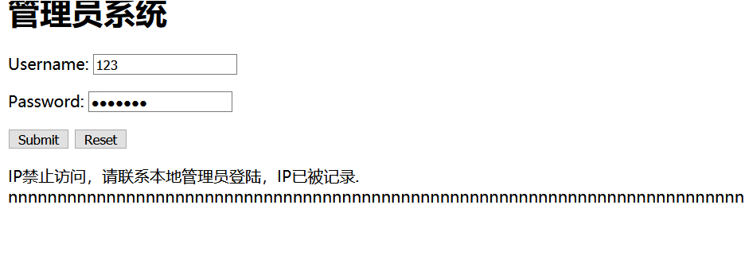
那么就和题目本地管理员联系上了，伪造XFF为自身IP进行访问。
将源码里的base64字样进行解码，得到 test123，盲猜应该是密码，随便输入用户名和这个密码，抓包伪造IP进行用户名的爆破，这里是必须先在proxy模块伪造了IP后才能进行爆破，否则的话得不到用户名，得到admin
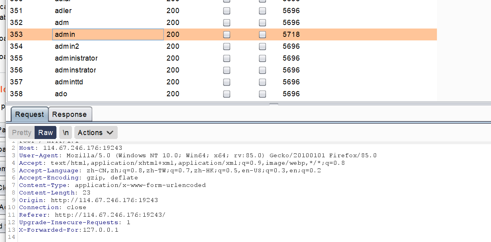
输入用户名和密码，伪造IP，得到flag。
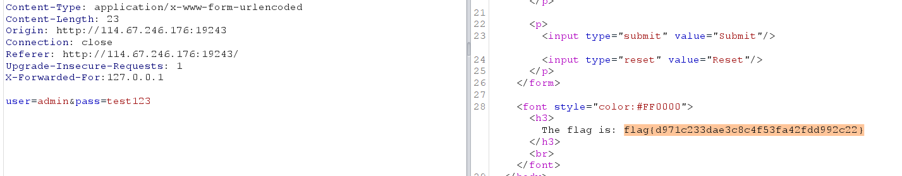
web13-看看源代码？
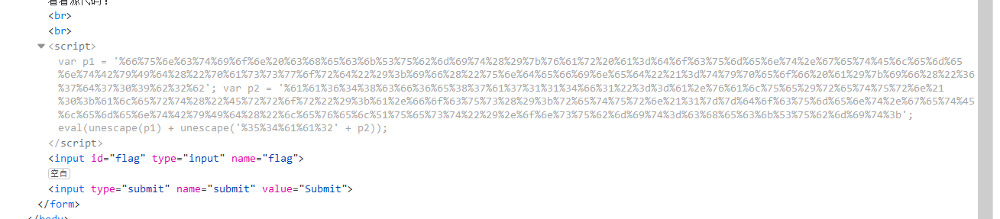
采用url解码之后根据eval函数的提示，将URL解码得到的三个字符串拼接得到的假flag提交得到真flag。
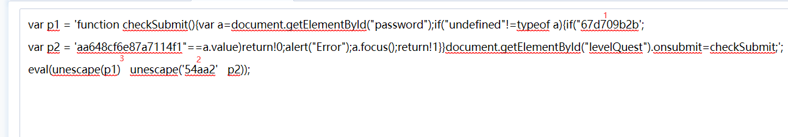
web14
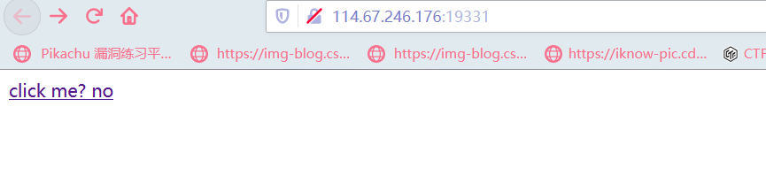
- 点击查看：
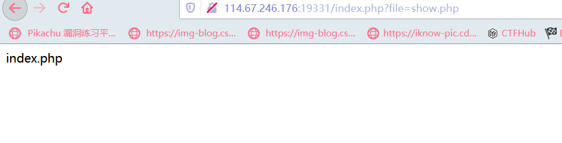
- 发现URL处存在参数?file=show.php，且flag可能存在于index.php里，想到文件包含漏洞以及解题常用的PHP伪协议：
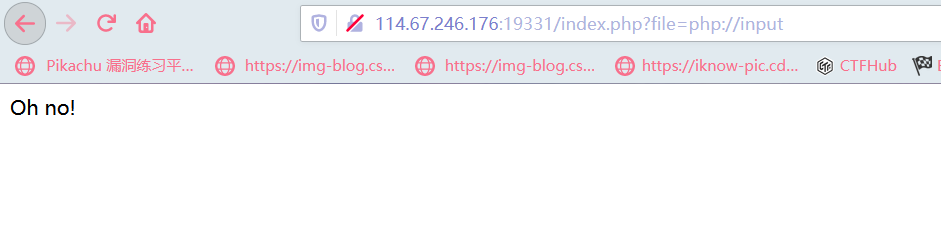
- php://input 被过滤，考虑php://filter协议：
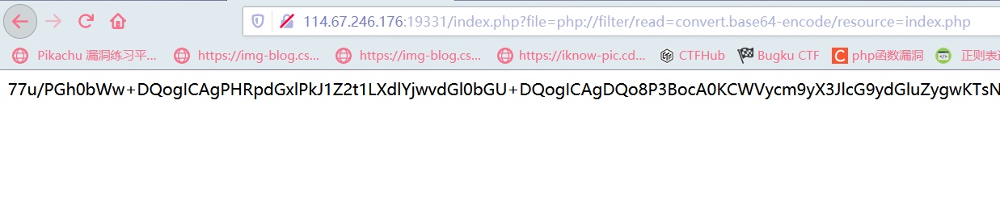
- 进行base64的解码得到flag：
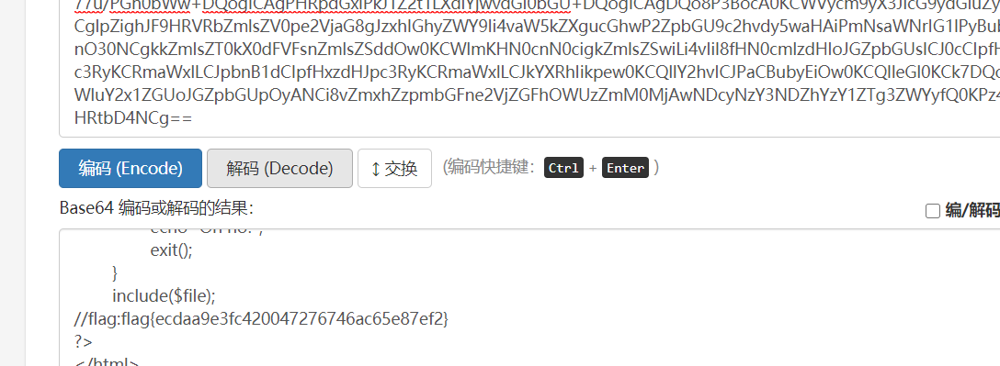
web15-好像需要密码
进行burp抓包，五位纯数字的密码爆破。
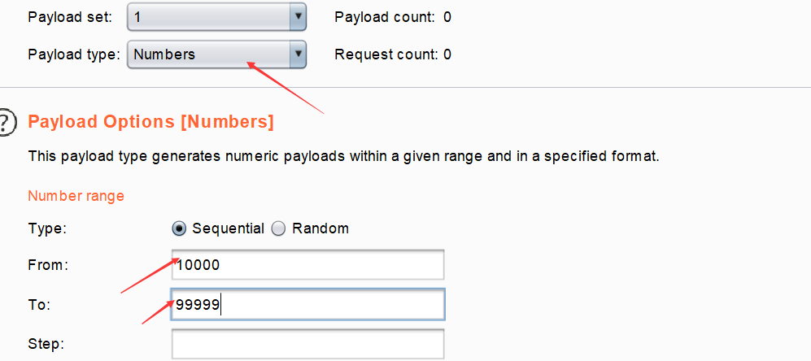
web16-备份是个好习惯
一看备份嘛就猜测是.bak index.php.bak,输入发现可以下载到备份文件，打开查看代码，md5的弱比较，采用md5缺陷绕过，构造数组，也可以采用0e开头的md5相同的两组值，这里采用数组绕过，还要注意的就是代码中对key进行了过滤，考虑双写绕过：kkeyey 或者kekeyy的形式都可以，构造时一定记得是kkeyey1[]和kkeyey2[],不然就会像我一开始一样在想，这构造挺对的吧，咋没结果呢，哦~忘记1和2了。(这种错误我也真的是)
评论里的做法有的使用御剑进行扫描的，这个过程有点漫长，还在等待ing。所以就盲猜了一下下。
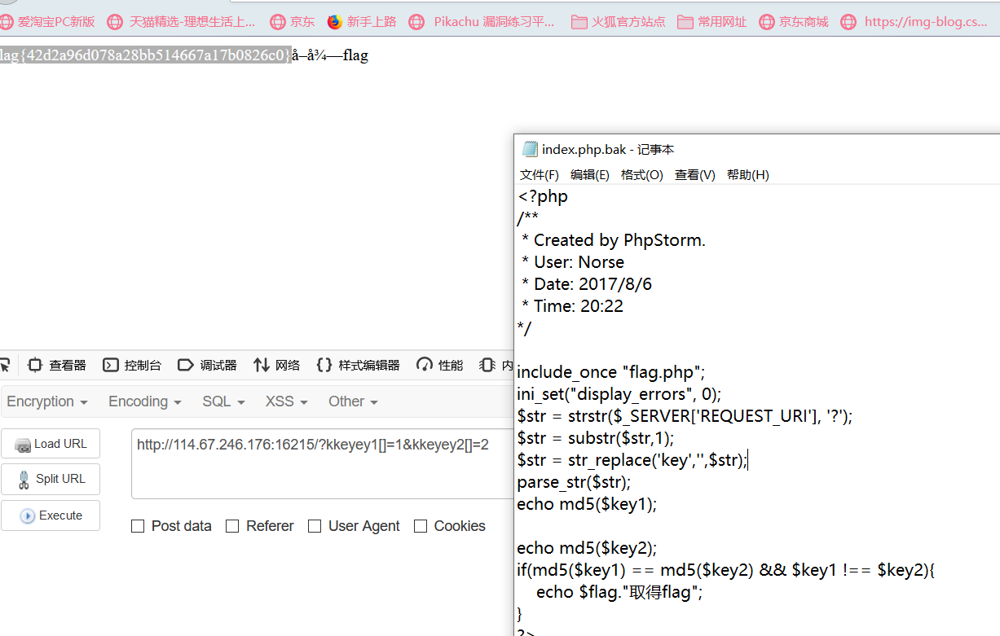
web17
- 进入页面：
得到一个成绩查询单，分别查询1,2,3都能回显正常，输入4没有回显，尝试在1后输入’分号，没有回显，再输入#，回显正常，判断为SQL注入，字符类型。
- 查看源码，post方式提交表单，参数变量为id。
也可以通过bp抓包得知。
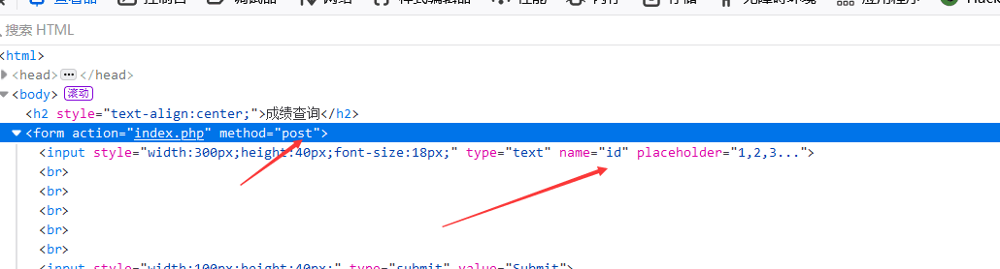
- 进行order by 判断字段数为4，union select 得到回显位为2,3,4.进行爆破数据库，表名，字段名，字段内容，得到flag。
- 爆数据库名：id=0’ union select 1,2,3,database()#
得到数据库名为：skctf
- 爆表名：id=0’ union select 1,2,3,(select group_concat(table_name) from information_schema.tables where table_schema=’skctf’#
得到表名有：fl4g,sc
- 爆字段名：id=0’ union select 1,2,3,(select group_concat(column_name) from information_schema.columns where table_name=’fl4g’#
得到字段名：skctf_flag
- 爆字段内容：id=0’ union select 1,2,3,select skctf_flag from fl4g#
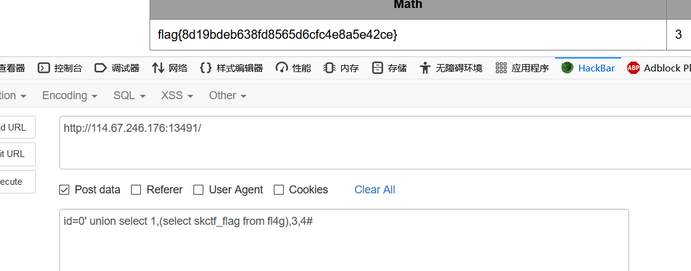
web18-秋名山车神
多次刷新得到post提交的变量 value，而且每次要提交计算的表达式是会变化的：
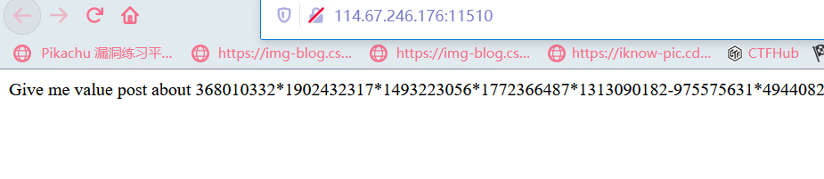
使用脚本运行：(网上的wp里的脚本)得到flag。
1 | import requests //引入request库 |
这个脚本重点还是第7行的正则，解释下
- re.search()表示从文本的第一个字符匹配到最后一个，其第一个参数为正则表达式，第二个参数是要匹配的文本
- r’’表示内容为原生字符串，防止被转义
- (\d+[+-])+(\d+)：\d+ 表示匹配一个或多个数字；[+-] 表示匹配一个加号或一个减号或一个乘号（注：减号在中括号内是特殊字符，要用反斜杠转义）；所以 (\d+[+-*])+ 表示匹配多个数字和运算符组成的“表达式”；最后再加上一组数字 (\d+) 即可
- group()返回字符串
原文传送门：https://blog.csdn.net/weixin_43578492/article/details/101701339
web19-速度要快
一开始是查看了一下源码发现需要用post方式上传margin变量，在消息头中发现一段base64加密的flag。双重解码后传值给margin进行上传，发现：
查看wp发现其实flag是动态的，每次刷新网页都会变化，所以就用脚本进行获取flag。(脚本还是先收集下来吧.)
脚本：
1 | import requests |
web20-cookie欺骗
url处有一个是“a2V5cy50eHQ=”base64解码后是“keys.txt”，line的功能是行数，这时就想看看index.php（base64后为aW5kZXgucGhwCg==）
然后给file参数1,2,3……发现出现了代码。使用脚本来收集代码：
1 | import requests |
得到源码：
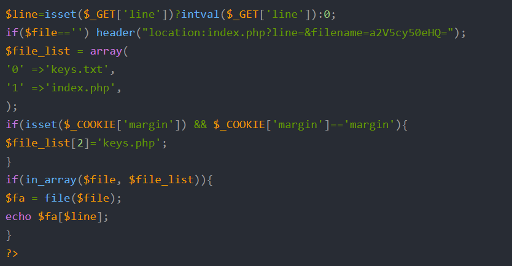
代码审计发现只要访问key.php并且需要在http请求中，传递一个Cookies，内容为margin的键值对。
使用脚本就能跑出flag。
1 | import requests |
web21
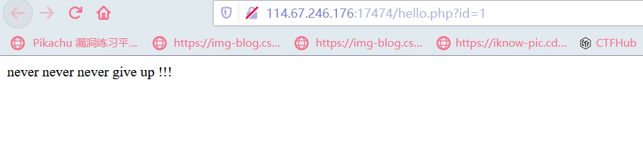
- 查看源码发现有一个1p.html：
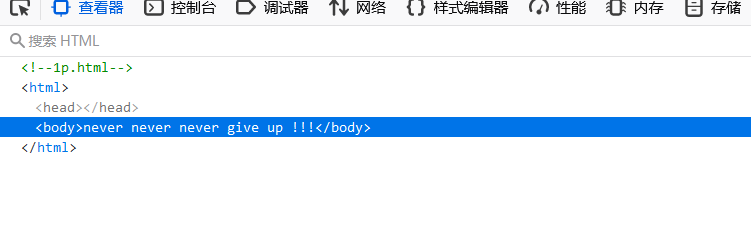
- 直接访问的话会跳转到bugku论坛的主页，所以在此进行burp抓包后再进行1p.html的访问：
得到一大段URL编码
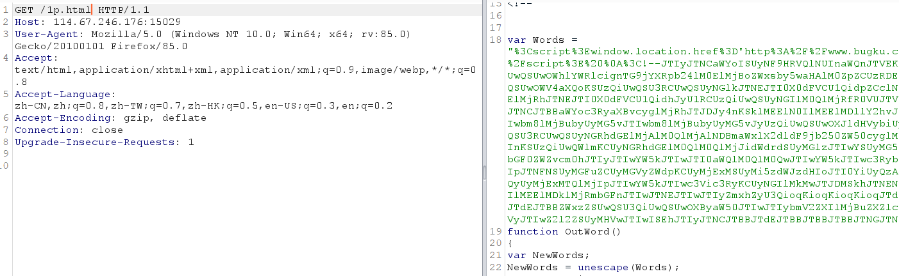
- 在此要进行三重解码：
URL解码——>base64解码——>URL解码
得到一段重要代码：
1 | ";if(!$_GET['id']) |
- 进行代码审计：
stripos() 函数查找字符串在另一字符串中第一次出现的位置（不区分大小写）。
语法：
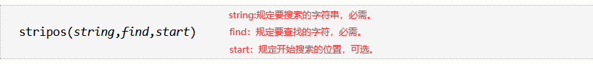
- 相关函数：
strripos() - 查找字符串在另一字符串中最后一次出现的位置（不区分大小写）
strrpos() - 查找字符串在另一字符串中最后一次出现的位置（区分大小写）
substr() 函数返回字符串的一部分。
语法：substr(string,start,length)
eregi():eregi()函数在一个字符串搜索指定的模式的字符串。搜索不区分大小写。eregi()可以特别有用的检查有效性字符串,如密码。
可选的输入参数规则包含一个数组的所有匹配表达式,他们被正则表达式的括号分组。
如果匹配成功返回true,否则,则返回false。
ereg() 有区分大小写，eregi()本函数与大小写无关。
eregi有两个漏洞：
①%00截断及遇到%00则默认为字符串的结束
②当参数a为数组时它的返回值是FALSE,可以绕过ereg(‘^[0-9]+$’,$a)===substr($a,42)
第 1 行：限制 URL 查询字符串中必须有非空非零变量 id
第 9 行：限制变量 $a 中不能含有字符 点（.）
第 15 行：要满足以下 5 条表达式才会爆 flag：
- 变量 $data 弱等于字符串 bugku is a nice plateform!
- 变量 $id 弱等于整型数 0
- 变量 $b 的长度大于 5
- 字符串 1114 要与字符串 111 连接变量 $b 的第一个字符构成的正则表达式匹配,变量 $b 的第一个字符弱不等于整型数 4
只有满足上述条件构造出来的payload才符合要求。
要求id为非空非零且弱类型比较等于0，那么该变量只能为为空非零字符串。这里假设$id=“asd”
有关 PHP 类型比较的详情可参考：PHP 类型比较表
关于data参数的弱类型，源码中变量 $data 是由 file_get_contents() 函数读取变量 $a 的值而得，所以 $a 的值必须为数据流。
由此考虑PHP伪协议的构造。
这里用伪协议 php:// 来访问输入输出的数据流，其中 php://input 可以访问原始请求数据中的只读流。这里令 $a = “php://input”，并在请求主体中提交字符串 bugku is a nice plateform! 。
- 源码中待匹配字符串（第二个参数）已确定为 “1114”，正则表达式（第一个参数）由 “111” 连接 b 的 第 一 个 字 符 组 成 ，利用eregi()函数的00截断漏洞，我们将变量b的第一个字符设为%00，设$b=%0012345, 由此%00后面内容被截断，满足 “1114” 与 “111” 匹配。
构造payload如下：
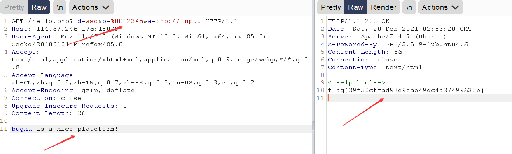
参考原文：https://blog.csdn.net/qq_41333578/article/details/92759619
web24
- 查看一下源码发现链接处指向code.txt，进行访问:
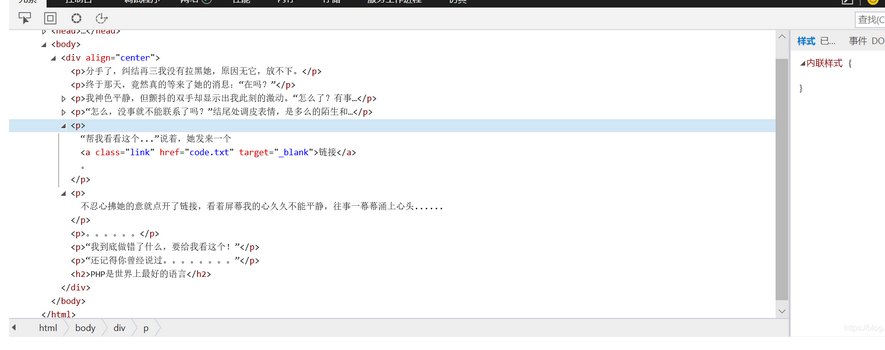
- 得到简单的php代码，进行代码审计：
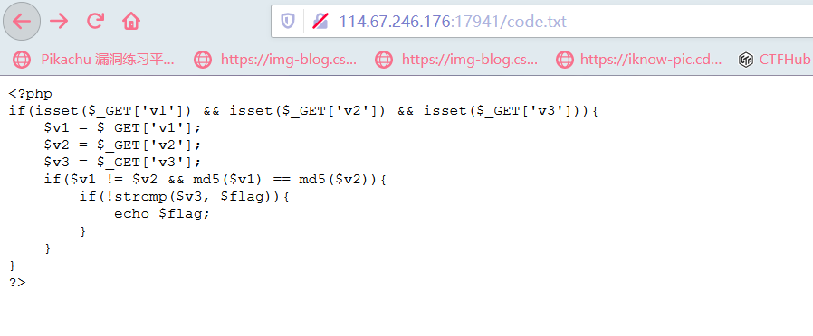
- v1和v2使用md5的弱比较，进行md5缺陷绕过，构造数组：v1[]=1&v2[]=2
1 | if(!strcmp($v3, $flag)){ |
strcmp()用于比较两个字符串是否相等，这里表示如果不相等即strcmp（$v3, $flag）返回的是0，那么当它为非0的时候就输出flag。
- 使用strmap()函数漏洞：strcmp()在比较字符串和数组的时候直接返回0，这样通过把目标变量设置成数组就可以绕过该函数的限制。
strcmp绕过：
将v3构造成数组。
strcmp(array,string)=null=0
v3[]=blag
构造payload：
1 | ?v1[]=1&v2[]=2&v3[]=blag |
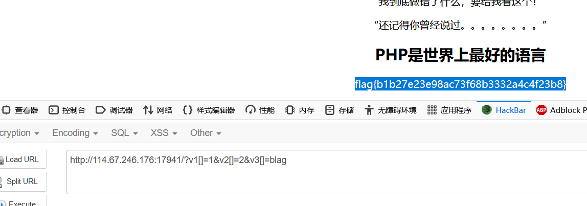
we25-SQL约束攻击
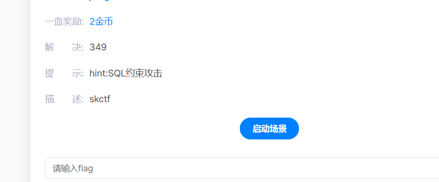
基础知识：基于约束的SQL注入
- 数据库字符串比较:在数据库对字符串进行比较时,如果两个字符的长度不一样,则会将较短的字符串末尾填充空格,使两个字符串的长度一致.
比如这两条语句
select * from admin where username=’vampire’
select *from admin where username=’vampire ‘
他们的查询结果是一致的.
- INSERT截断: 这是数据库的另一个特性,当设计一字段时,我们都必须对其设定一个最大长度,比如CHAR(255),VARCHAR(20),但是当长度超过限制的时候,数据库就会将其截断,只保留限定的长度.(注意这里我们为什么需要insert注入:空格之后一定需要再跟一个或多个任意字符,防止程序在检查用户名是否已经存在时匹配到目标用户)
利用：
假设已有一个用户admin ,password
当我们注册新用户admin ’ 123456时
数据就会保存有
admin password
admin 123456
此时，登录admin便可使用admin 123456
解题思路
- 发现要注册
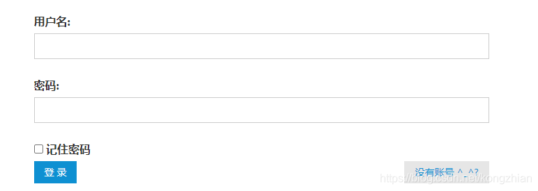
注册完后可以登录，但提示想要获取flag的话需要管理员身份，猜测管理员用户名为admin
- 重新注册
1 | admin 1 //空格是为了截断，1是为了与原有的admin不冲突，不会显示已注册的提示，但是保存时则是admin |
- 使用admin 1和123456aA登录，得到flag
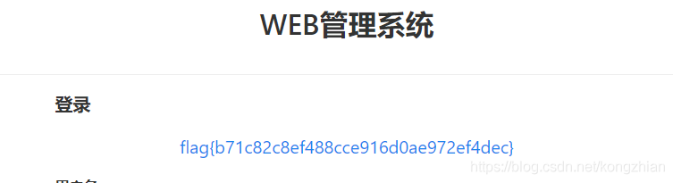
转载自：https://blog.csdn.net/kongzhian/article/details/112030256
web26-google
- 考察referer的伪造
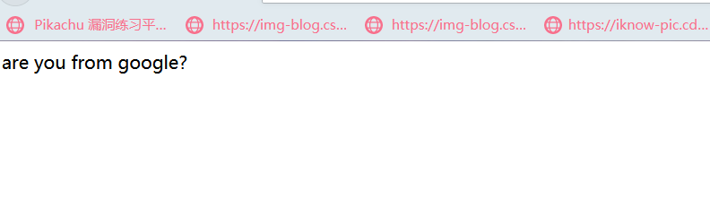
- Referer的作用是告诉服务器请求是从哪里来的，所以只需要用BP在请求头加个Referer: https://www.google.com
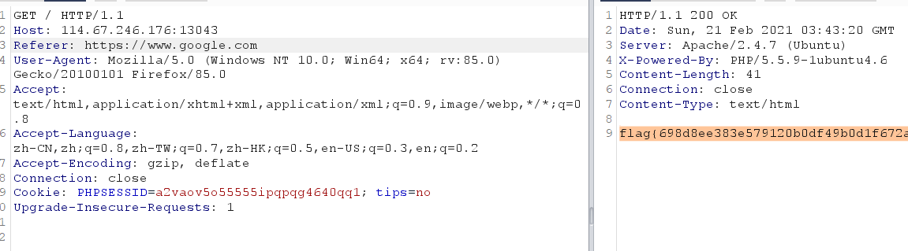
xxx二手交易市场
一 开始进入到网站要注册的时候还以为是SQL注入漏洞，也尝试着注册后登陆抓包，但是也没有发现什么存在的注入点。查看了一些wp，是在上传头像照片的时候存在一个文件上传漏洞。
- 上传头像照片，进行抓包，发现图片是转换成base64上传的，将内容换成一句话木马的base64 编码形式，修改
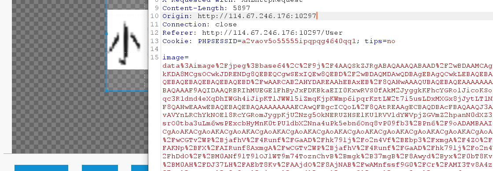
- 在这里需要采用**** 加引号的形式。
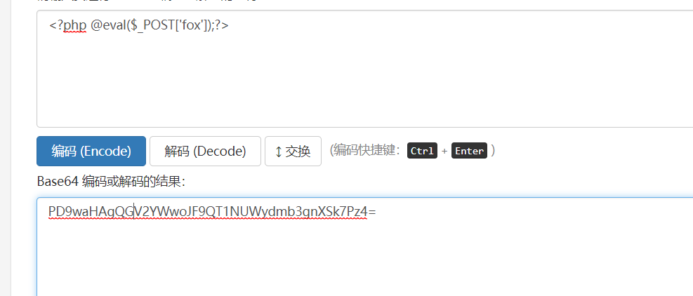
- 在对应位置传入一句话木马，并将文件格式改为php，得到对应路径。
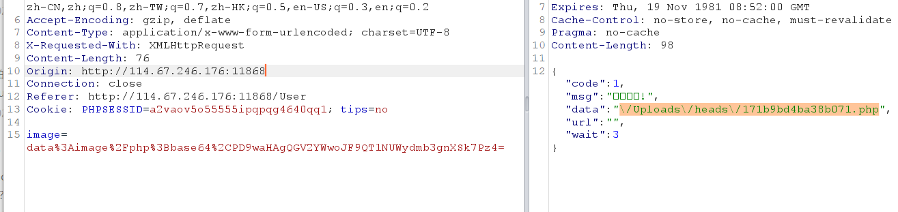
- 把包修改后发出去，将在burp得到的地址在URL处整理一下。
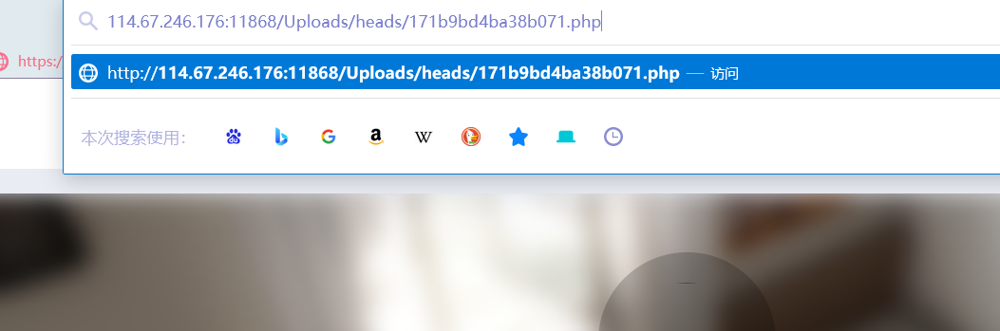
- 连接蚁剑，得到flag。
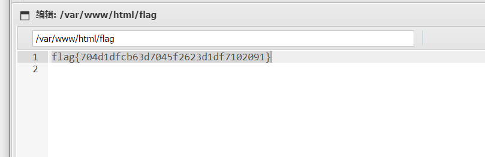